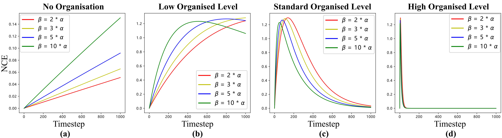
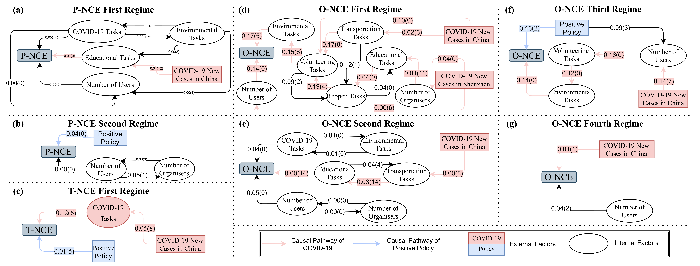

Crowdsource volunteering efforts have contributed significantly to pandemic response and recovery during the COVID-19 outbreak. In such efforts, individual volunteers can collaborate to achieve rapid mobilisation toward emergent community demands. In this study, we quantitively study this phenomenon using the concept of self-organisation, by proposing a data-driven framework to investigate when and how self-organisation emerged during the pandemic response and how it relates to effectiveness of volunteer organisations in general. Using activity data collected from a mobile volunteer platform in Shenzhen ('Anti-Pandemic Pioneers'), China, we found that volunteers' task participation and social and task preferences show multiple phases of self-organisation in response to changing epidemic situations and centralised interventions. Simulation experiments further show that the self-organised volunteer system can become more responsive and more robust in the face of uncertain community demands with minimal centralised guidance.
NCEs and Self-organization intervals for three types of volunteer behaviors:
Self-organised volunteer behaviour during the COVID-19 outbreak in Shenzhen
Click the following dropdown buttons to visualize details in Shenzhen and its districts.

Schematic diagram of a simplified version 3-by-3 grid simulation
Click here to create your own simulation!
Click here to download data and code used in the paper.